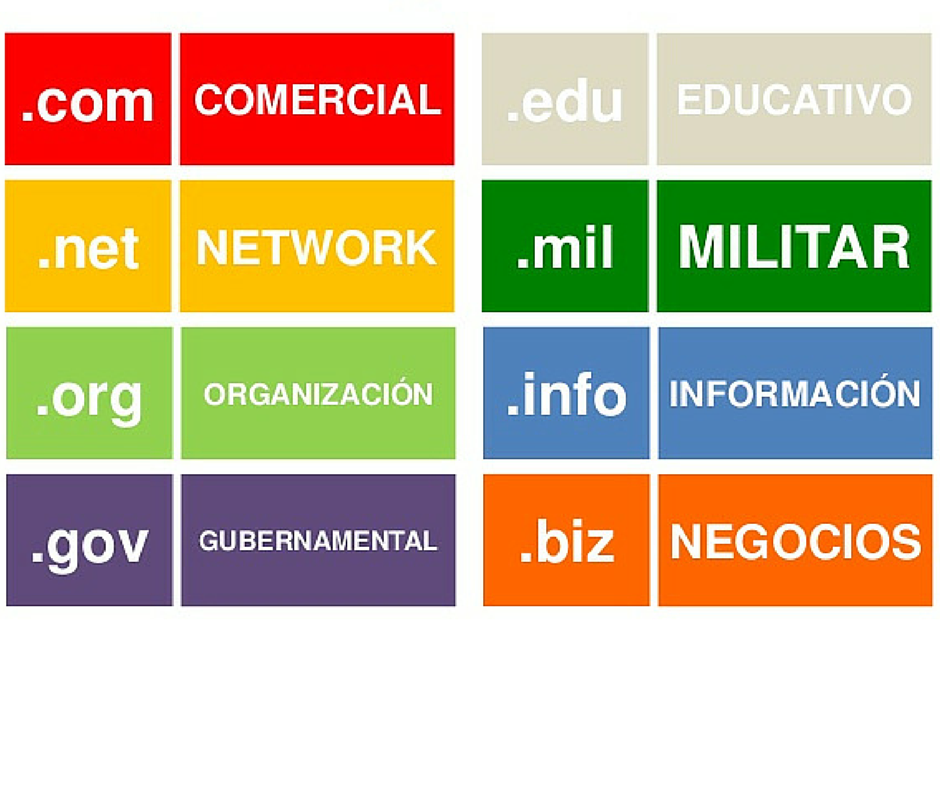

Cuando creas un sitio web, necesitas un dominio (nombre principal) y, si lo deseas, subdominios para organizar diferentes secciones.
Genéricos (gTLDs): .com, .net, .org, .info, .shop, etc.
Geográficos (ccTLDs): .mx (México), .es (España), .ar (Argentina), etc.
Especializados: .tech, .blog, .app, etc.

5.2 Subdominios
Es una extensión del dominio principal que permite organizar contenido en diferentes secciones. Ejemplo:
blog.tusitio.com → Para un blog.
tienda.tusitio.com → Para una tienda online.
soporte.tusitio.com → Para atención al cliente.
Ventajas de los subdominios:
Separan contenido sin necesidad de comprar otro dominio.
Útil para diferentes idiomas (ej. es.tusitio.com, fr.tusitio.com).
Ideal para versiones móviles (m.tusitio.com).